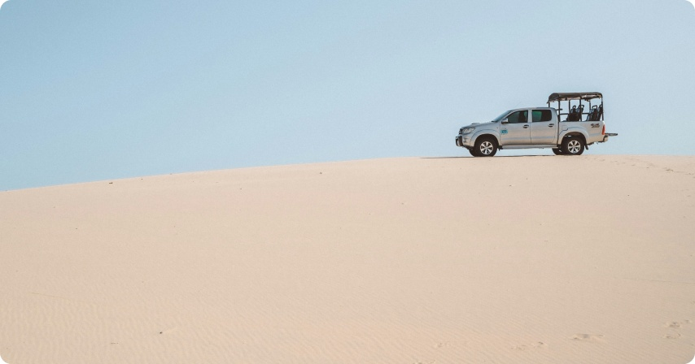

Passeio Nascer do sol

O Passeio Nascer do sol nos Lençóis Maranhenses é um dos mais belos a região. Esse passeio de meio período te leva para conhecer as lagoas belíssimas e paisagens deslumbrantes. O passeio privativo acontece na madrugada em torno das 04hs00m, na Toyota Jardineira (como é conhecida).
São 12km de trilha percorridos de toyota, chegamos ao Parque Nacional dos Lençóis Maranhenses, são 155 mil hectares, dunas e lagoas a perder de vista. Entre elas temos as principais como Lagoa Azul ou Lagoa Bonita que serão serão visitadas depois de uma boa caminhada junto ao guia que irá passar algumas informações e tirar algumas duvidas.Pausa para o café da manhã nos Lençóis Maranhenses em quanto assistimos o nascer do sol que acontece por volta das 05:40.
Tempo livre para caminhada nas redondezas e banho nas lagoas. Retorno do passeio por volta das 07hs da manhã chegando em Barreirinhas por volta das 08hs.
Passeio Lagoa Bonita

Passeio regular com embarque por volta das 14hs30m. Depois de passar na ultima pousada, a Toyota Jardineira (como é conhecida), faz uma pequena pausa em super mercado para comprar água, lanche e etc. Saindo do super mercado, vamos direto para a margem do Rio Preguiças aonde teremos a travessia do veiculo para outro lado do rio.
Depois da travessia, damos inicio ao passeio com emoção. São 12km de trilha de toyota, balançaremos um pouco a cada quilometro e vamos apreciando cada pedaço de vegetação. Depois dos 12km percorridos de toyota, chegamos ao Parque Nacional dos Lençóis Maranhenses, são 155 mil hectares, dunas e lagoas a perder de vista. Entre elas temos as principais como Lagoa Azul e dos Peixes que serão serão visitadas depois de uma boa caminhada junto ao guia que irá passar algumas informações e tirar algumas duvidas. Por volta das 17hs30m o guia retorna com o grupo para a primeira duna, uma das mais altas pra dali todos assistirem o por do sol.
Depois o por do sol, teremos o retorno do mesmos 12km até a balsa. Antes da travessia, o cliente pode aproveitar um pouco da tapioca ou artesanato local.
Passeio Lagoa Azul

O Passeio para conhecer os Grandes Lençóis é um dos principais da região. Esse passeio de meio período te leva para conhecer as lagoas belíssimas e paisagens deslumbrantes. O passeio regular acontece pela manhã por volta das 09hs00m. Depois de passar na ultima pousada, a Toyota Jardineira (como é conhecida), faz uma pequena pausa em super mercado para comprar água, lanche e etc. Saindo do super mercado, vamos direto para a margem do Rio Preguiças aonde teremos a travessia do veiculo para outro lado do rio.
Depois da travessia, damos inicio ao passeio com emoção. São 12km de trilha de toyota, balançaremos um pouco a cada quilometro e vamos apreciando cada pedaço de vegetação. Depois dos 12km percorridos de toyota, chegamos ao Parque Nacional dos Lençóis Maranhenses, são 155 mil hectares, dunas e lagoas a perder de vista. Entre elas temos as principais como Lagoa Azul e dos Peixes que serão serão visitadas depois de uma boa caminhada junto ao guia que irá passar algumas informações e tirar algumas duvidas.
Retorno para o veiculo entre 12:00 e 12:30 com chegada prevista em Barreirinhas a partir das 13:00.
Passeio Santo Amaro-MA

Embarque pela manhã entre 07:00 e 08:00 da manhã com destino a Santo Amaro. Trecho inicial pegando a Br 402 com duração de aproxi 50 minutos até chegar ao povoado por nome Sangue. A partir de Sangue teremos mais de 40 minutos até chegar na cidade de Santo Amaro.Parada no restaurante da cidade para pedir almoço (não incluso). Logo após as orientações, iniciaremos o passeio acompanhado por guia local em português pelo Parque Nacional dos Lençóis Maranhenses com visita a Lagoa da Gaivota e Andorinha. Durante o percurso haverá tempo suficiente para fotos e banho nas lagoas.
Retorno do passeio 13:00 para o almoço. Logo após, tempo livre para descanso e depois seguiremos para Barreirinhas. chegada em Barreirinhas no final do dia por volta das 16:30.
Passeio das Dunas 4×4 Barreirinhas
O Passeio para conhecer os Grandes Lençóis é um dos principais da região, saindo tanto pela manhã quanto a tarde. Esse passeio de meio período te leva para conhecer as lagoas belíssimas e paisagens deslumbrantes. Para quem está chegando em Barreirinhas (portal de entrada do parque) por volta de 12hs00m, vai pegar a melhor parte dessa rota. O passeio regular acontece a tarde em torno das 14hs30m, depois de passar na ultima pousada, a Toyota Jardineira (como é conhecida), faz uma pequena pausa em super mercado para comprar água, lanche e etc. Saindo do super mercado, vamos direto para a margem do Rio Preguiças aonde teremos a travessia do veiculo para outro lado do rio.
Depois da travessia, damos inicio ao passeio com emoção. São 12km de trilha de toyota, balançaremos um pouco a cada quilometro e vamos apreciando cada pedaço de vegetação. Depois dos 12km percorridos de toyota, chegamos ao Parque Nacional dos Lençóis Maranhenses, são 155 mil hectares, dunas e lagoas a perder de vista.
Depois dos 12km percorridos de toyota, chegamos ao Parque Nacional dos Lençóis Maranhenses, são 155 mil hectares, dunas e lagoas a perder de vista. Entre elas temos as principais como Lagoa Azul e dos Peixes que serão serão visitadas depois de uma boa caminhada junto ao guia que irá passar algumas informações e tirar algumas duvidas. Por volta das 17hs30m o guia retorna com o grupo para a primeira duna, uma das mais altas pra dali todos assistirem o por do sol.
Depois o por do sol, teremos o retorno do mesmos 12km até a balsa. Antes da travessia, o cliente pode aproveitar um pouco da tapioca ou artesanato local.
Passeio de Lancha Barreirinhas

Embarque entre 08:00 e 09:00 da manhã para passeio de Lancha pelo Rio Preguiças. Após todos estiverem acomodados, o piloto estará passando algumas informações sobre o roteiro. Saída para o passeio passando por uma linda área verde. Nesse passeio teremos três paradas:
O primeiro Local será na tenda dos macacos em vassouras, área de dunas, rio e mangue com paisagem impar. Passaremos aproximadamente 45 minutos visitando o local. Alem de uma pequena estrutura para compra de água de coco e artesanato, veremos também alguns macaquinhos curiosos que sempre estão por ali para saber quem são os novos visitantes.
O segundo local será no Farol da Marinha no povoado Mandacaru. O farol tem 160 degraus e com certeza vale a pena o esforço de subir cada um para chegar ao topo. A recompensa é uma linda vista panorâmica para os Grandes Lençóis, Pequenos Lençóis e a praia de Caburé. No local é possivel ver muitas lojas de artesanato.
O terceiro e ultimo local para visita será a praia de caburé, um braço de areia gigantesco que faz a divisão do rio Preguiças e o Oceano Atlântico. Em caburé será possivel aproveitar o bom banho de mar ou até mesmo de rio. O Local é muito procurado por amantes de esportes e muitos alugam quadriciclos para passear as margens da praia. O almoço (não incluso) pode ser pedido ali mesmo, nos vários restaurantes com um cardápio bem dividido e a base de peixe.
Retorno do passeio por volta das 14:00 e 14:30, depois que todos estiverem na lancha, teremos aproximadamente 01:45 minutos para o trajeto de volta até chegar na cidade de Barreirinhas. Desembarque em Barreirinhas entre 15:30 e 16:00.
Passeio Boia Cross Cardosa

Com águas cristalinas e cercado por buritizais, Cardosa povoado próximo de Barreirinhas, é mais uma das atrações dos Lençóis Maranhenses. Ideal para relaxar apenas tomando banho ou aproveitando para praticar o boia cross, é atualmente um dos mais procurados dentro da cidade, passeio de meio período que torna-se relaxante devido à paz e a tranquilidade do Rio que levará a conhecer este local maravilhoso!
Cardosa é um povoado que fica a 25 km aonde o acesso é somente feito somente em veículo 4X4, no povoado há um o Rio por nome Formiga, rio de águas calmas e cristalinas onde é feita a descida em boias infláveis por 1h, acompanhados de guias locais da comunidade.
A Saída acontece por volta das 08hs da manhã para o povoado São João da Cordosa pela MA 402 e teremos parte do trecho em uma estrada de piçarra passando pela Chapada Maranhenses. Ao chegar na comunidade, iniciaremos a descida no Rio Formiga sob boias. Durante a flutuação, poderemos observar a vegetação local e alguns ribeirinhos que vivem na região. Será 01 hora e 20 de descida em águas cristalinas acompanhado de um condutor guia. Depois de todo o percurso, o cliente poderá aproveitar um pouco mais o banho o rio antes de sair.
Retorno do passeio por volta das 11:30 chegando em Barreirinhas por volta de 13:00. Transfer até a pousada para aguardar transporte. Retorno para São Luís entre 16 e 17hs.
Passeio de Quadriciclo Barreirinhas

Um dos melhores passeios e mais procurado para os Lençóis Maranhenses é o de Quadriciclo. Para você não ter nenhuma duvida sobre esse passeio único, vamos explicar como ele acontece detalhadamente. O passeio de quadriciclo tem duração de um dia inteiro, e o melhor de tudo é que o próprio cliente vai pilotando essa maquina.
A saída é por volta das 09hs00 da manhã, o guia vai até o hotel ou pousada em que o cliente está hospedado com a maquina, lá mesmo acontece o treinamento para pilotar. Os guias são experientes e trinados o que faz a aula ser bem rápida, sem falar que não é difícil aprender… É preciso seguir todas as orientações de segurança para evitar acidentes durante o trajeto e bebidas alcoólicas não são permitidas no passeio. Todos devem comprar água e um lanche, o guia terá uma caixa térmica para guardar tudo. Logo depois da aula de pilotagem, sairemos para o passeio em uma trilha. Seguiremos o trajeto em fila com o guia orientando.
Teremos uma paisagem verde, uma aventura única de aproximadamente 01:20 até chegar as dunas dos Pequenos Lençóis. A paisagem desse lado é espetacular que junta a beleza e a sensação de pilotar essa maquina dentro da região.
O local de apoio é conhecido como a tenda dos macacos em Vassouras aonde teremos a mistura de mangue, dunas e rio. No local da para comprar água de côco, artesanato e etc. Ficaremos em torno de 45 minutos no local para caminhada e fotos.
Logo depois, teremos mais 01hs30m de lindas paisagens paisagens até chegar a praia de caburé onde será o principal ponto de parada. Tempo livre para almoço e banho de praia.
Saída da praia de caburé por volta das 14hs com destino a Barreirinhas. Chegada em Barreirinhas pode variar entre 17hs e 18hs.
Passeio Canto do Atins

Saída pela manhã a partir das 08:00 em veículo 4×4 em direção ao Parque Nacional dos Lençóis Maranhenses. Logo no inicio é necessário atravessar o Rio Preguiças em uma balsa para acessar a trilha que nos leva até o Povoado de Atins.
Durante a viagem veremos os pequenos vilarejos com seus moradores e sua vida simples e pacata em meio natureza. Também veremos parte da Morraria, nome dados pelos mais antigos moradores de Barreirinhas a esse maravilhoso monumento natural de imensas dunas. Chegando em Atins, desfrutaremos dessa vila de pescadores, a Foz do Rio e Preguiças e a maravilhosa Praia de Atins que é praticamente deserta.
Depois percorremos em meio a vila para pegarmos a trilha que nos leva ao Canto do Atins. Esse lugar que está localizado entre o mar e as dunas dos Lençóis Maranhenses e possui dois restaurantes famosos: o Restaurante da Luzia e o Restaurante do Sr Antônio. Essa fama se deve ao delicioso camarão grelhado servido por eles. Receita de família, onde o segredo é o tempero que é guardado a sete chaves. Além do camarão existem outras opções para refeição.
Depois de visitar o Canto do Atins seguimos de carro até o ponto que o ICMBio nos permite, desse ponte em diante continuamos na caminhada até as lagoas da região na época cheia.
Logo após desfrutarmos do banho refrescante voltamos ao Canto onde faremos a pausa para o almoço (não incluso). Após o almoço teremos uma pequena pausa para descanso para então retornarmos. Chegada em Barreirinhas por volta das 17hs.